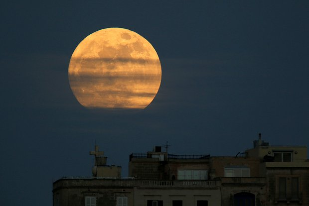

Раскрыт настоящий возраст Луны
Узнать большеПриближавшийся к американскому аппарату российский спутник сгорел
Узнать большеПочему в СССР мечтали взорвать атомную бомбу на Луне?
Узнать большеРоссийские ученые заявили о таинственных инопланетных сигналах
Узнать больше